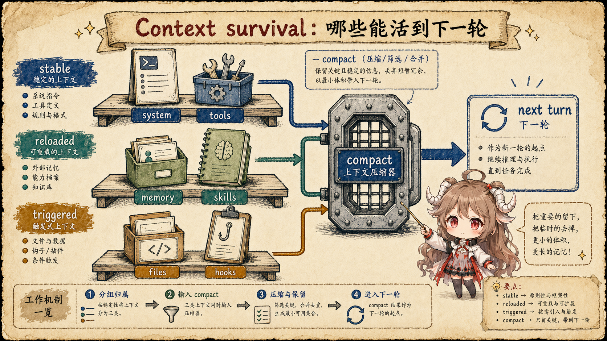
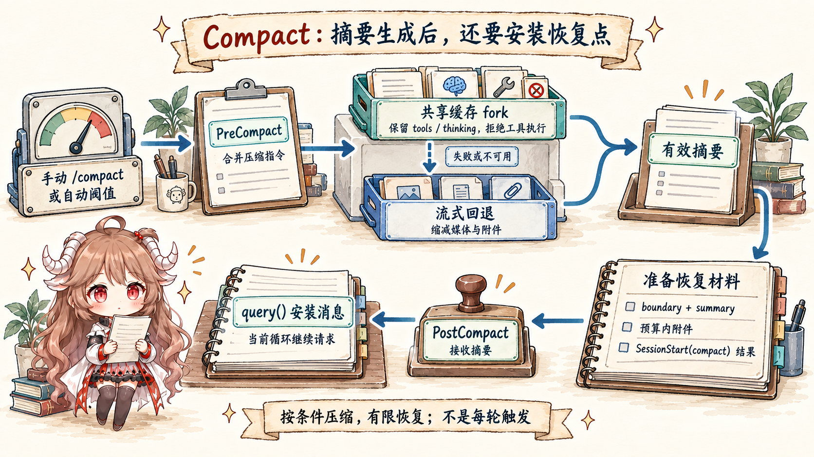

上一篇讲 hooks 时，已经看到 resume 会触发
SessionStart hooks。这里继续往后追：resume 到底恢复了什么？
如果只把它看成“加载旧 messages”，你会解释不了很多源码细节：
为什么要 copy plan？为什么要恢复 content replacement？为什么 fork resume 不能 adopt 原 transcript？
为什么 compact 后的消息链要特殊处理 parent uuid？
这篇的结论先说清：transcript 是持久化的恢复记录，不是直接发给模型的 prompt。 Claude Code 写入 transcript 时要维护消息链和附属记录；读取 transcript 时要清洗坏尾巴和未完成 tool_use； 真正 resume 时，还要把 transcript 里的状态重新安装回 AppState、session pointer、worktree、 agent definition、content replacement state 和 context-collapse store。
阅读目标：本篇只追本地会话恢复过程：
recordTranscript() 怎样写记录，loadConversationForResume()
怎样读取和清理记录，processResumedConversation() 和 REPL 的 /resume
怎样恢复运行时状态，以及 --fork-session 为什么不能直接接管原会话文件。
远端会话、分享会话和 remote agent 只在必要处点到为止。
产品概念参考 Claude Code 官方概览； 源码层来自 Rememorio/claude-code 公开镜像。 本文只描述客户端源码可见的本地持久化和恢复逻辑，不推断服务端会话存储或模型内部状态。
transcript rows
-> loadConversationForResume(sessionId)
-> clean incomplete tail / tool_use pairs
-> run SessionStart resume hooks
-> processResumedConversation()
-> restore AppState, session pointer, worktree, agent, replacement state一、先分清四种数据形态
继续会话为什么复杂？因为同一段工作不只保存为一种数据。 屏幕上看到的是 UI messages；磁盘里保存的是 transcript 和附属 entry； 下一轮运行时使用的是经过恢复、清洗、压缩和工具预算处理后的消息与状态； 真正发给模型的则要进一步转换成 provider API 能接收的 request shape。
这四种数据不能混。UI 可以隐藏进度、折叠工具输出；transcript 要保留消息的前后关系； runtime state 要保证下一轮工具调用引用正确的文件、agent 和替换记录；API request 则必须满足模型和工具协议。 这也是 resume 不能简单等于“把 JSONL 里的 messages 读出来”的原因。
| 数据形态 | 负责什么 | resume 时的风险 |
|---|---|---|
| UI | 用户看到的消息、进度、工具 JSX 和输入框状态。 | 看起来续上了，但内部状态可能没恢复。 |
| Transcript | 可持久化消息链、sidechain、metadata、content replacement、collapse commit。 | 坏尾巴、重复消息、parent 链断裂会污染下一轮。 |
| Runtime | AppState、session id、worktree、agent、文件历史、工具替换状态。 | 工具结果、文件快照、agent 定义和工作目录对不上。 |
| API request | 进入模型请求的消息、工具 schema 和影响 cache 的字段顺序。 | 未完成 tool_use、thinking-only 消息或过大工具结果会触发协议错误。 |
二、写入 transcript：不是全量覆盖，而是维护消息链
transcript 写入的入口之一在 React 侧。
useLogMessages()
会观察当前 messages。正常情况下 messages 是 append-only，所以它只把新增 tail 交给
recordTranscript()；如果第一条消息变了，就说明可能经历了 compaction 或
/clear，需要让 recordTranscript() 自己做全量去重和 parent 链处理。
真正落盘在
recordTranscript()。
它先用 cleanMessagesForLogging() 清理可记录消息，再读取当前 session 已有的 message set。
如果一个消息已经写过，并且它还处在新消息之前的 prefix 里，源码会把它当成 parent hint；
如果 compaction 把新的压缩标记和 summary 放在前面，后面的旧 messagesToKeep 就不会被错误拿来当 parent。

2.1 附属记录也要跟着写
transcript 里不只有消息。同一个模块
还会记录 sidechain transcript、queue operation、file history snapshot、attribution snapshot 和
content replacement。这里最容易漏掉的是 content replacement：
queryLoop()
在发模型请求前会执行工具结果预算，如果替换了过大的工具结果，就通过
recordContentReplacement() 写入可恢复记录。
这意味着“旧工具结果被压缩或替换过”不是屏幕状态，而是恢复状态。 resume 时如果只加载 messages，不恢复 replacement 记录，下一轮就可能把本该替换的完整工具输出重新送进请求， 造成上下文膨胀，并改变后续请求的缓存前缀。
三、读取 transcript：先清理坏尾巴，再补 resume hooks
读取主入口是
loadConversationForResume()。
它支持几种来源：--continue 时 source 为空，表示找最近会话；
--resume 可以给 session id，也可以给已经加载好的 log，或者给 transcript file。
找到 log 后，它会复制 plan、复制文件历史、检查 resume consistency，然后进入反序列化。
3.1 反序列化不是 JSON.parse
deserializeMessagesWithInterruptDetection()
会先迁移 legacy attachment type，剔除无效 permission mode；
再过滤未解决的 tool_use、thinking-only assistant message、只有空白文本的 assistant message。
如果检测到中断中的 turn，它会追加一个 meta user message：Continue from where you left off.；
如果最后一个有效消息是 user，还会插入一个 synthetic assistant sentinel，保证对话形状合法。
这一步是在修复一次被中断的会话末尾。不是每条落盘记录都能原样喂回下一轮。 未完成工具调用、孤立 thinking block、用户刚提交但模型没响应的半截 turn，都要先归一化成可恢复形状。
3.2 resume 会重新跑 SessionStart hooks
loadConversationForResume() 还会在消息加载后执行
processSessionStartHooks("resume")，
并把 hook messages 追加到 conversation。
这和上一篇能接上：resume 后的 session 是新的运行时起点，需要让 session 级 hooks 有机会补上下文。
四、恢复 runtime：切 session，再恢复附属状态
CLI 的 --continue 先清缓存，再调用
loadConversationForResume() 和 processResumedConversation()。
--resume 则可以从分享、文件路径或 session id 进入同一套处理路径；
源码里这些分支
最终都会拿到 processedResume，再把 initial messages、file history、content replacements、
agent name/color 交给 REPL。
processResumedConversation()
做的是 runtime 恢复，而不是消息恢复。它会匹配 coordinator/normal mode；
非 fork resume 会 switchSession() 到旧 session id，并按 transcript path 处理跨目录恢复；
然后重命名 asciicast、reset session file pointer、恢复 cost state、恢复 session metadata、
恢复 worktree、adopt 已存在的 transcript file，最后恢复 context-collapse store、agent definition 和初始 AppState。

4.1 adoptResumedSessionFile() 决定后续写入哪个文件
adoptResumedSessionFile()
看起来只是把 project.sessionFile 指向 getTranscriptPath()，
但注释解释了它为什么重要：恢复后即使用户还没发下一条消息，退出清理也要能把 metadata 写回原 session file。
如果还按 fresh session 的懒创建逻辑走，命名、tag、agent 等 metadata 就可能只停留在内存里。
换句话说，正常 resume 后的记录继续写入原 session；fork resume 则不能这样做， 因为 fork 应该写入新 session file。
五、交互式 /resume 还要处理当前会话
交互式 /resume 比 CLI 启动时的 resume 更麻烦，因为它发生在一个已经运行的 REPL 里。
REPL.resume()
先反序列化目标 log，再在切换前执行当前 session 的 SessionEnd hooks；
然后对目标 session 执行 SessionStart(resume) hooks、恢复文件历史和 attribution、
恢复 agent、恢复 standalone agent context、恢复 read file state、切 session、重命名录制文件、恢复 metadata 和 worktree。
最后它还会恢复 remote agent tasks，重建 content replacement state，清空当前工具 JSX 和输入框，
再把 setMessages(() => messages) 作为新的 UI 起点。
所以交互式 resume 是一次“从当前 runtime 切到另一个 runtime”的热切换，不是简单替换数组。
5.1 Resume picker 只是入口，恢复逻辑仍然完整
选择器页面也不是只返回一个文件名。
ResumeConversation
会检查跨项目 resume，调用 loadConversationForResume()，必要时切 session，
恢复 cost、agent、metadata、worktree 和 context-collapse，再把结果作为
initialMessages、initialFileHistorySnapshots 和
initialContentReplacements 传给 REPL。
这解释了为什么 session 列表也要逐步补齐信息。
enrichLogs()
不是为了展示漂亮列表，而是从轻量 log 扩展出可以 resume 的有效会话，同时过滤掉不该展示的记录。
六、普通 resume 和 fork resume 的区别
最后看一个很实用的分叉：普通 resume 和 fork resume。 普通 resume 要继续原 session，所以会切到旧 session id，恢复原 metadata/worktree，并 adopt 原 transcript。 fork resume 则保留新 session id，不接管原 session file，只复制必要消息和状态。

| 路径 | session id | transcript file | 为什么这么做 |
|---|---|---|---|
普通 --continue / --resume |
复用被恢复 session。 | adoptResumedSessionFile() 接管原文件。 |
后续消息、metadata、cost 和 worktree 都属于同一条会话链。 |
交互式 /resume |
切到目标 session。 | 退出当前 session 后接管目标文件。 | 这是热切换，必须先收尾当前 session，再恢复目标 runtime。 |
--fork-session |
保留 fresh session。 | 新文件由 recordTranscript() 写入。 |
fork 是派生，不应该把新消息写回原 transcript。 |
| 带 content replacement 的 fork | 保留 fresh session。 | 重新写 replacement entry 到新 session。 | 让新 session 里的 tool_use_id 能找到对应替换记录，避免恢复成完整大输出。 |
这就是第九篇的核心：resume 不是“续聊天”，而是把持久化记录重新变成可运行状态。 消息只是其中一层，旁边还有文件历史、内容替换、collapse commit、metadata、agent、worktree、 hooks 和 session 文件写入目标。少恢复任何一层，下一轮看起来也许能发出去， 但它已经不是原来那条会话了。
下一篇会把这个问题推进到性能层： 为什么同样是恢复和继续，真正影响速度和成本的，是请求形状、prompt cache、 稳定前缀和 fork-only suffix。
参考源码与文档
- Rememorio/claude-code 公开镜像
- Claude Code overview
- useLogMessages.ts：incremental transcript logging
- sessionStorage.ts：recordTranscript
- sessionStorage.ts：sidechain and content replacement records
- query.ts：tool result budget and replacement persistence
- conversationRecovery.ts：deserializeMessagesWithInterruptDetection
- conversationRecovery.ts：loadConversationForResume
- main.tsx：--continue resume path
- main.tsx：--resume source branches
- sessionRestore.ts：restoreSessionStateFromLog
- sessionRestore.ts：processResumedConversation
- sessionStorage.ts：adoptResumedSessionFile
- REPL.tsx：interactive resume
- ResumeConversation.tsx：resume picker path
- sessionStorage.ts：enrichLogs